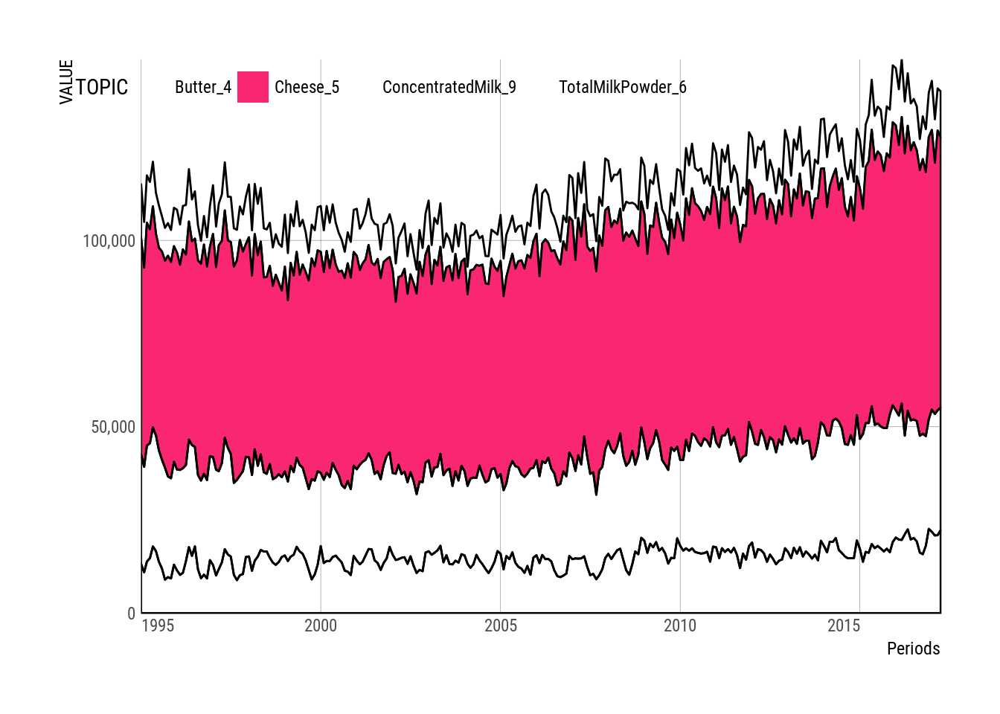

First, we define the API URI and the dataset ID
api <- "https://opendata.cbs.nl/ODataApi/OData/"
## DSD <- "82572ENG" # Input-Output: "83068ENG"
DSD <- "7425eng"Finally, we return a dataset
scheme <- "TypedDataSet"
# print query
cbsODataAPI(api=api, DSD=DSD, scheme=scheme, query=TRUE)## [1] "https://opendata.cbs.nl/ODataApi/OData/7425eng/TypedDataSet"cbs_data <- cbsODataAPI(api=api, DSD=DSD, scheme=scheme, query=FALSE)
## knitr::kable(cbs_data[1:n_table, 1:6])
knitr::kable(cbs_data[1:n_table,1:7])| ID | Periods | Volume_1 | FatContent_2 | ProteinContent_3 | Butter_4 | Cheese_5 |
|---|---|---|---|---|---|---|
| 0 | 1995MM01 | 911676 | 4.58 | 3.54 | 14380 | 58071 |
| 1 | 1995MM02 | 837617 | 4.52 | 3.48 | 12263 | 53419 |
| 2 | 1995MM03 | 940083 | 4.51 | 3.46 | 12699 | 59799 |
| 3 | 1995MM04 | 935337 | 4.50 | 3.44 | 12702 | 57396 |
| 4 | 1995MM05 | 985108 | 4.34 | 3.45 | 11979 | 59326 |
cbs_df <- cbsOdataDFgather(cbs_data)library(ggplot2)
library(hrbrthemes)
ggthemr::ggthemr('flat', spacing = 0.5, type = 'inner')
p <-
cbs_df %>%
dplyr::filter(!TOPIC %in% c("Volume_1", "FatContent_2", "ProteinContent_3",
"WholeMilkPowder_7", "SkimmedMilkPowder_8")) %>%
ggplot(aes(x = Periods, y = VALUE, fill = TOPIC, color = factor(0))) +
geom_area(
# position="identity",
## alpha = 0.5
) +
## scale_fill_ipsum() +
scale_fill_manual(values = c(
## '#3498db', # blue
'transparent', # blue
## '#f1c40f', # yellow
"#F92672", # pink
## '#e74c3c', # red
'transparent', # red
## '#2ecc71' # green
'transparent' # green
)) +
scale_x_date(expand=c(0,0)) +
scale_y_comma() +
## labs(title="Milk supply and dairy production",
## subtitle="Monthly, January 1995 - May 2015",
## caption="Source: https:/opendata.cbs.nl/ODataApi/OData/7425eng/TypedDataSet") +
theme_ipsum_rc(grid="XY") +
theme(axis.text.x=element_text(hjust=c(0, 0.5, 0.5, 0.5, 1))) +
## theme(legend.position="right") +
## guides(color = guide_legend(show = FALSE)) +
scale_color_manual(guide = FALSE, values = "black") +
theme(legend.position=c(0.30, 0.95),
legend.direction = "horizontal") # +
## annotate("text", x = as.Date("2005-01-01"), y = 70000,
## label = "CHEESE", size = 12, color = "blue")
p## Warning: Removed 268 rows containing missing values (position_stack).
## head(cbs_df)
## cbs_xts <-
## cbs_df %>%
## dplyr::filter(!TOPIC %in% c("Volume_1")) %>%
## cbsOdataDFtoXTS()
## cbs_xts %>%
## dygraphs::dygraph()